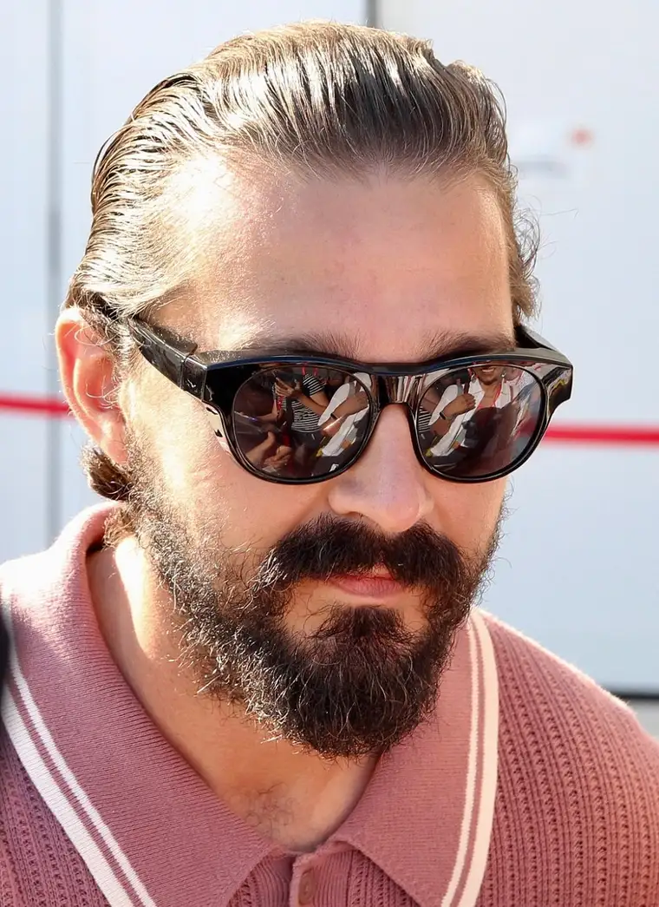

Recently, the Biblical story of the Prodigal Son came back into view, flooding my mind and heart with images of God’s mercy; or, as Fr. Kyle Metzger put it during a Mass homily, “God’s scandalous mercy.”
A few weeks earlier, I had read of the startling, and unlikely, conversion of actor Shia LeBeouf, who, in studying for a starring role in a forthcoming movie about St. Padre Pio, apparently came to embrace the Christian faith.

Padre Pio was an Italian Capuchin friar, stigmatist and mystic who lived from 1887 to 1968, and is venerated as a saint in the Catholic Church. A stigmatist is believed to be supernaturally impressed with the wounds of Christ. He also was thought to read people’s souls.
Watching a video interview between Bishop Robert Barron and LeBeouf, I celebrated to hear of LeBeouf’s soul’s awakening to God’s presence in his life. But soon thereafter, I noted some fellow Christians questioning the authenticity of his conversion, pointing to the actor’s sordid past.
Though I agree anything Hollywood-related needs prudent examination, especially in the life of one who has brought controversy, I question the timing of the arrows of accusation.
When some friends reminded me of LeBeouf’s questionable history after I shared the article on Facebook, I was confounded. Inherent in Christianity is the central theme of forgiveness; we are not to judge each other by our past sins. As Oscar Wilde once succinctly put it, “Every saint has a past, and every sinner has a future.”
Recently, I came into a situation in which I was being looked upon in what seemed a Pharisaical way. Emerging from that moment of challenge, I spent time with Jesus in the Eucharist, thanking him for all the blessings he’s given me, and asking for forgiveness for any time I might have looked upon anyone in such a way—or even appeared to.
As one who tries to remind a fallen culture of the need to shed sin, repent, and come back to God’s mercy—and only because I have experienced the great mercy of God myself—I know at times it would seem I carry this kind of attitude. But my heart, because of Christ, has a deeply merciful bend, especially in personal encounters.
It was good to be reminded that mercy must be paramount, especially in so broken a world. The need for humility can’t be overstated.
In his “The Four Cardinal Virtues,” German philosopher Josef Pieper wrote that we cannot grasp the concreteness of a man’s ethical decision from the outside, but we can do so, in a certain way, through the love of friendship. We can help shape a friend’s decision by the virtue of love, he continued, which makes the friend’s problem, and even his ego, our own.
We can’t know God’s hidden work in the soul of Shia LeBeouf, but we can hope that his conversion is real. To a fellow child of God, I say, “Welcome home,” while praying for much-needed strength in soul.
[For the sake of having a repository for my newspaper columns and articles, I reprint them here, with permission, a week after their run date. The preceding ran in The Forum newspaper on Sept. 19, 2022.]